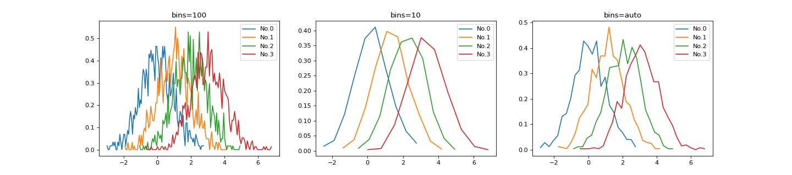
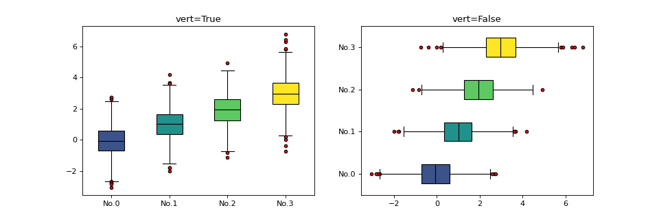
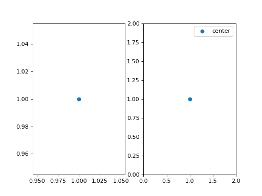
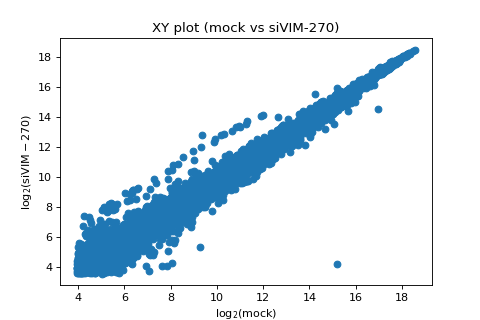
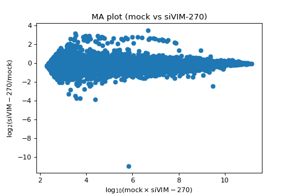

teilab.plot.matplotlib module¶
A group of plot functions useful for analysis using matplotlib.
If you would like to
make changes to the plot or draw other plots, please refer to the official documentation.
see the analysis examples, please refer to the notebook/Local/Main-Lecture-Material-matplotlib.ipynb
※ Compared to teilab.plot.plotly module, you can see the difference between the two libraries. (matplotlib, and plotly)
- teilab.plot.matplotlib.density_plot(data: nptyping.types._ndarray.NDArray[typing.Any, typing.Any, nptyping.types._object.Object], labels: List[str] = [], colors: List[Any] = [], cmap: Optional[Union[str, matplotlib.colors.Colormap]] = None, bins: Union[int, List[numbers.Number], str] = 100, range: Optional[Tuple[float, float]] = None, title: str = 'Density Distribution', ax: Optional[matplotlib.axes._axes.Axes] = None, plotkwargs: Dict[str, Any] = {}, layoutkwargs: Dict[str, Any] = {}, **kwargs) → matplotlib.axes._axes.Axes[source]¶
Plot density dirstibutions.
- Parameters
data (NDArray[(Any,Any),Number]) – Input data. Shape = (
n_samples,n_features)labels (List[str], optional) – Labels for each sample. Defaults to
[].colors (List[Any], optional) – Colors for each sample. Defaults to
[].cmap (Optional[Union[str,Colormap]], optional) – A
Colormapobject or a color map name. Defaults toNone.bins (Union[int,List[Number],str], optional) – The number of equal-width bins in the given range. Defaults to
100.range (Optional[Tuple[float,float]], optional) – The lower and upper range of the bins. If not provided, range is simply
(data[i].min(), data[i].max()). Defaults toNone.title (str, optional) – Figure Title. Defaults to
"Density Distribution".ax (Optional[Axes], optional) – An instance of
Axes. Defaults toNone.plotkwargs (Dict[str,Any]) – Keyword arguments for
ax.plot. Defaults to{}.layoutkwargs (Dict[str,Any]) – Keyword arguments for
update_layout. Defaults to{}.
- Returns
An instance of
Axeswith density distributions.- Return type
Axes
>>> import numpy as np >>> from teilab.utils import dict2str, subplots_create >>> from teilab.plot.matplotlib import density_plot >>> n_samples, n_features = (4, 1000) >>> data = np.random.RandomState(0).normal(loc=np.expand_dims(np.arange(n_samples), axis=1), size=(n_samples,n_features)) >>> kwargses = [{"bins":100},{"bins":10},{"bins":"auto"}] >>> nfigs = len(kwargses) >>> fig, axes = subplots_create(ncols=nfigs, figsize=(int(6*nfigs),4), style="matplotlib") >>> for ax,kwargs in zip(axes,kwargses): ... _ = density_plot(data, ax=ax, title=dict2str(kwargs), **kwargs) >>> fig.show()

- teilab.plot.matplotlib.cumulative_density_plot(data: Union[nptyping.types._ndarray.NDArray[typing.Any, typing.Any, nptyping.types._object.Object], pandas.core.series.Series], labels: List[str] = [], colors: List[Any] = [], cmap: Optional[Union[str, matplotlib.colors.Colormap]] = None, title: str = 'Cumulative Density Distribution', ylabel='Frequency', ax: Optional[matplotlib.axes._axes.Axes] = None, plotkwargs: Dict[str, Any] = {}, layoutkwargs: Dict[str, Any] = {}, **kwargs) → matplotlib.axes._axes.Axes[source]¶
Plot cumulative density dirstibutions.
- Parameters
data (Union[NDArray[(Any,Any),Number],Series]) – Input data. Shape = (
n_samples,n_features)labels (List[str], optional) – Labels for each sample. Defaults to
[].colors (List[Any], optional) – Colors for each sample. Defaults to
[].cmap (Optional[Union[str,Colormap]], optional) – A
Colormapobject or a color map name. Defaults toNone.title (str, optional) – Subplot Title. Defaults to
"Cumulative Density Distribution".ylabel (str, optional) – Subplot y-axis label. Defaults to
"Frequency"ax (Optional[Axes], optional) – An instance of
Axes. Defaults toNone.plotkwargs (Dict[str,Any]) – Keyword arguments for
ax.plot. Defaults to{}.layoutkwargs (Dict[str,Any]) – Keyword arguments for
update_layout. Defaults to{}.
- Returns
An instance of
Axeswith cumulative density distributions.- Return type
Axes
>>> import numpy as np >>> from teilab.utils import dict2str, subplots_create >>> from teilab.plot.matplotlib import cumulative_density_plot >>> n_samples, n_features = (4, 1000) >>> data = np.random.RandomState(0).normal(loc=np.expand_dims(np.arange(n_samples), axis=1), size=(n_samples,n_features)) >>> fig, ax = subplots_create(figsize=(6,4), style="matplotlib") >>> ax = cumulative_density_plot(data, ax=ax, xlabel="value") >>> fig.show()

- teilab.plot.matplotlib.boxplot(data: nptyping.types._ndarray.NDArray[typing.Any, typing.Any, nptyping.types._object.Object], labels: List[str] = [], colors: List[Any] = [], cmap: Optional[Union[str, matplotlib.colors.Colormap]] = None, vert: bool = True, title: str = 'Box Plot', ax: Optional[matplotlib.axes._axes.Axes] = None, plotkwargs: Dict[str, Any] = {'flierprops': {'marker': 'o', 'markeredgecolor': 'black', 'markerfacecolor': 'red', 'markersize': 4}, 'medianprops': {'color': 'black'}}, layoutkwargs: Dict[str, Any] = {}, **kwargs) → matplotlib.axes._axes.Axes[source]¶
Plot box plots.
- Parameters
data (NDArray[(Any,Any),Number]) – Input data. Shape = (
n_samples,n_features)labels (List[str], optional) – Labels for each sample. Defaults to
[].colors (List[Any], optional) – Colors for each sample. Defaults to
[].cmap (Optional[Union[str,Colormap]], optional) – A
Colormapobject or a color map name. Defaults toNone.vert (bool, optional) – Whether to draw vertical boxes or horizontal boxes. Defaults to
True.title (str, optional) – Figure Title. Defaults to
"Box Plot".ax (Optional[Axes], optional) – An instance of
Axes. Defaults toNone.plotkwargs (Dict[str,Any]) – Keyword arguments for
ax.plot`. Defaults to ``dict(medianprops={"color": "black"}, flierprops={"marker":'o',"markersize":4,"markerfacecolor":"red","markeredgecolor":"black"}).layoutkwargs (Dict[str,Any]) – Keyword arguments for
update_layout. Defaults to{}.
- Returns
An instance of
Axeswith box plots.- Return type
Axes
>>> import numpy as np >>> from teilab.utils import dict2str, subplots_create >>> from teilab.plot.matplotlib import boxplot >>> n_samples, n_features = (4, 1000) >>> data = np.random.RandomState(0).normal(loc=np.expand_dims(np.arange(n_samples), axis=1), size=(n_samples,n_features)) >>> kwargses = [{"vert":True},{"vert":False}] >>> nfigs = len(kwargses) >>> fig, axes = subplots_create(ncols=nfigs, figsize=(int(6*nfigs),4), style="matplotlib") >>> for ax,kwargs in zip(axes,kwargses): ... _ = boxplot(data, title=dict2str(kwargs), ax=ax, **kwargs) >>> fig.show()

- teilab.plot.matplotlib.XYplot(df: pandas.core.frame.DataFrame, x: str, y: str, logarithmic: bool = True, color: Optional[str] = None, size: Optional[int] = None, ax: Optional[matplotlib.axes._axes.Axes] = None, plotkwargs: Dict[str, Any] = {}, layoutkwargs: Dict[str, Any] = {}, **kwargs) → matplotlib.axes._axes.Axes[source]¶
XY plot.
x-axis : \(\log_2{(\text{gProcessedSignal})}\) for each gene in sample
Xy-axis : \(\log_2{(\text{gProcessedSignal})}\) for each gene in sample
Y
- Parameters
df (pd.DataFrame) – DataFrame
x (str) – The column name for sample
X.y (str) – The column name for sample
Y.logarithmic (bool) – Whether to log the values of
df[x]anddf[y]color (Optional[str], optional) – The column name in
dfto assign color to marks. Defaults toNone.size (Optional[str], optional) – The column name in
dfto assign mark sizes. Defaults toNone.ax (Optional[Axes], optional) – An instance of
Axes. Defaults toNone.plotkwargs (Dict[str,Any]) – Keyword arguments for
ax.plot`. Defaults to ``dict(medianprops={"color": "black"}, flierprops={"marker":'o',"markersize":4,"markerfacecolor":"red","markeredgecolor":"black"}).layoutkwargs (Dict[str,Any]) – Keyword arguments for
update_layout. Defaults to{}.
- Returns
An instance of
Axeswith XY plot.- Return type
Axes
>>> import pandas as pd >>> from teilab.datasets import TeiLabDataSets >>> from teilab.plot.matplotlib import XYplot >>> from teilab.utils import subplots_create >>> datasets = TeiLabDataSets(verbose=False) >>> df_anno = datasets.read_data(no=0, usecols=datasets.ANNO_COLNAMES) >>> reliable_index = set(df_anno.index) >>> df_combined = df_anno.copy(deep=True) >>> for no in range(2): ... df_data = datasets.read_data(no=no) ... reliable_index = reliable_index & set(datasets.reliable_filter(df=df_data)) ... df_combined = pd.concat([ ... df_combined, ... df_data[[datasets.TARGET_COLNAME]].rename(columns={datasets.TARGET_COLNAME: datasets.samples.Condition[no]}) ... ], axis=1) >>> df_combined = df_combined.loc[reliable_index, :].reset_index(drop=True) >>> fig, ax = subplots_create(figsize=(6,4), style="matplotlib") >>> ax = XYplot(df=df_combined, x=datasets.samples.Condition[0], y=datasets.samples.Condition[1], ax=ax) >>> fig.show()

- teilab.plot.matplotlib.MAplot(df: pandas.core.frame.DataFrame, x: str, y: str, color: Optional[str] = None, size: Optional[str] = None, hlines: Union[Dict[numbers.Number, Dict[str, Any]], List[numbers.Number]] = [], ax: Optional[matplotlib.axes._axes.Axes] = None, plotkwargs: Dict[str, Any] = {}, layoutkwargs: Dict[str, Any] = {}, **kwargs) → matplotlib.axes._axes.Axes[source]¶
MA plot.
x-axis (Average): \(\log_2{(\text{gProcessedSignal})}\) for each gene in sample
Xy-axis (Minus) : \(\log_2{(\text{gProcessedSignal})}\) for each gene in sample
Y
- Parameters
df (pd.DataFrame) – DataFrame
x (str) – The column name for sample
X.y (str) – The column name for sample
Y.color (Optional[str], optional) – The column name in
dfto assign color to marks. Defaults toNone.size (Optional[str], optional) – The column name in
dfto assign mark sizes. Defaults toNone.hlines (Union[Dict[Number,Dict[str,Any]],List[Number]]) – Height (
y) to draw a horizon. If given a dictionary, values means kwargs ofax.hlinesax (Optional[Axes], optional) – An instance of
Axes. Defaults toNone.plotkwargs (Dict[str,Any]) – Keyword arguments for
ax.plot`. Defaults to ``dict(medianprops={"color": "black"}, flierprops={"marker":'o',"markersize":4,"markerfacecolor":"red","markeredgecolor":"black"}).layoutkwargs (Dict[str,Any]) – Keyword arguments for
update_layout. Defaults to{}.
- Returns
An instance of
Axeswith MA plot.- Return type
Axes
>>> import pandas as pd >>> from teilab.datasets import TeiLabDataSets >>> from teilab.plot.matplotlib import MAplot >>> from teilab.utils import subplots_create >>> datasets = TeiLabDataSets(verbose=False) >>> df_anno = datasets.read_data(no=0, usecols=datasets.ANNO_COLNAMES) >>> reliable_index = set(df_anno.index) >>> df_combined = df_anno.copy(deep=True) >>> for no in range(2): ... df_data = datasets.read_data(no=no) ... reliable_index = reliable_index & set(datasets.reliable_filter(df=df_data)) ... df_combined = pd.concat([ ... df_combined, ... df_data[[datasets.TARGET_COLNAME]].rename(columns={datasets.TARGET_COLNAME: datasets.samples.Condition[no]}) ... ], axis=1) >>> df_combined = df_combined.loc[reliable_index, :].reset_index(drop=True) >>> fig, ax = subplots_create(figsize=(6,4), style="matplotlib") >>> ax = MAplot( ... df=df_combined, ... x=datasets.samples.Condition[0], y=datasets.samples.Condition[1], ax=ax, ... hlines={ ... -1 : dict(colors='r', linewidths=1), ... 0 : dict(colors='r', linewidths=2), ... 1 : dict(colors='r', linewidths=1), ... } >>> ) >>> fig.show()

- teilab.plot.matplotlib.update_layout(ax: matplotlib.axes._axes.Axes, title: Optional[str] = None, xlabel: Optional[str] = None, ylabel: Optional[str] = None, xlim: List[float] = [], ylim: List[float] = [], legend: bool = True) → matplotlib.axes._axes.Axes[source]¶
Update the layout of
matplotlib.axes.Axesobject. See Documentation for details.- Parameters
ax (Axes) – An instance of
Axes.title (Optional[str], optional) – Figure title. Defaults to
None.xlabel (Optional[str], optional) – X axis label. Defaults to
None.ylabel (Optional[str], optional) – Y axis label. Defaults to
None.xlim (List[float]) – X axis range. Defaults to
[].ylim (List[float]) – Y axis range. Defaults to
[].legend (bool, optional) – Whether to show legend. Defaults to
True.
- Returns
A figure element with layout updated.
- Return type
Axes
>>> from teilab.utils import subplots_create >>> from teilab.plot.matplotlib import update_layout >>> fig, axes = subplots_create(ncols=2, style="matplotlib", figsize=(8,4)) >>> for ax in axes: ax.scatter(1,1,label="center") >>> _ = update_layout(ax=axes[1], xlim=(0,2), ylim=(0,2), legend=True) >>> fig.show()